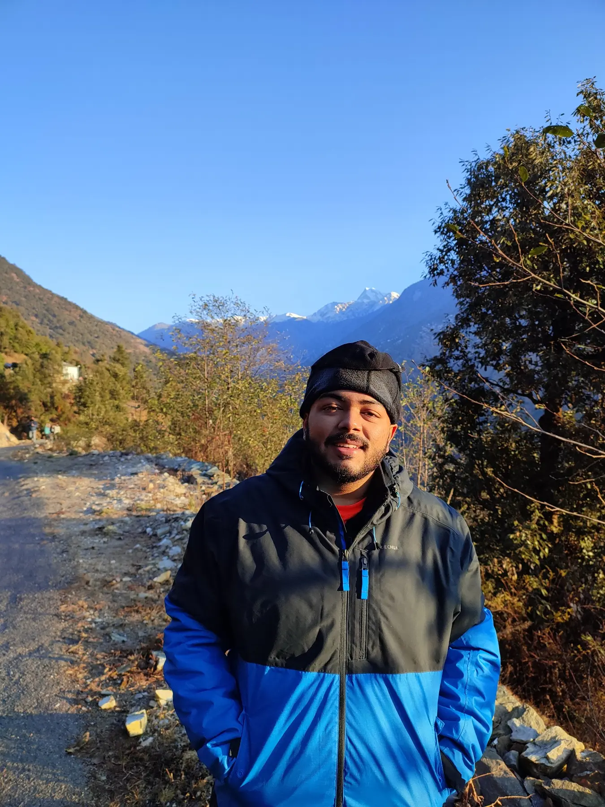
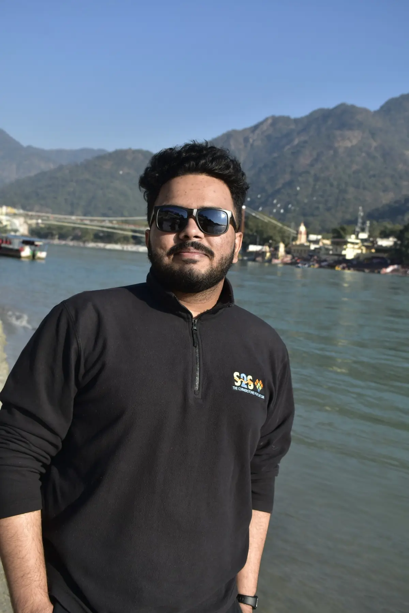

Approach
Outcome
Sanjyot Sanjay Pote
Wireless systems engineer and Purdue ECE graduate student working across RF hardware, 5G networks, and the architectures that can connect the places terrestrial systems cannot.

Selected work / 04
Select a project to see the problem, approach, and result.
What drives the work
I like moving between simulation, lab instruments, code, and field conditions. That has meant shaping antennas in CST, validating RF boards on a VNA and signal analyzer, automating 5G test sweeps, and asking which satellite architecture actually fits a deployment—not merely which looks best on paper.
At Purdue, I’m deepening that systems view through wireless communication networks, probability, and semiconductor devices.
Change the modulation and add channel noise. The receiver has to decide which symbol was sent.
Experience
M.S. Electrical & Computer Engineering · GPA 3.93/4.00
B.E. Electronics & Telecommunications · GPA 9.18/10 · Department Rank 4

Beyond the bench
Outside engineering, you’ll usually find me following Formula 1, playing badminton or piano, writing, debating science, or helping ideas find a stage. I’ve led curation at TEDxDYPatilUniversity and editorial and social initiatives at RAIT.
“Build something useful enough to improve a life beyond your own.”
Research & writing